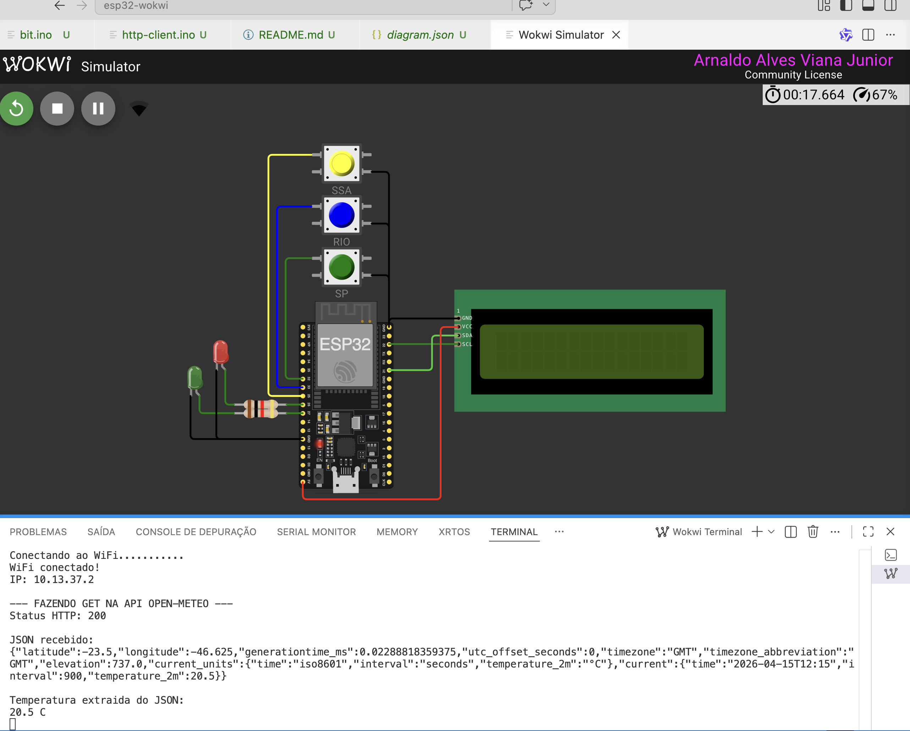

Lab08 - Client HTTP
HTTPClient
Visão geral da aula
Ja sabemos servir páginas e aplicações web embarcadas. Nesta aula, a proposta muda de direção: em vez de o ESP32 servir páginas ou dados para outros clientes, ele passará a atuar como cliente HTTP, consumindo APIs disponíveis na internet.
O objetivo desta aula é apresentar o uso da classe HTTPClient, mostrando como o ESP32 pode:
- realizar requisições
GETem APIs reais; - extrair e interpretar informações específicas de um objeto JSON.
O que é um cliente HTTP
Neste primeiro momento, não serão utilizados botão, LCD ou outras camadas de hardware. A ideia é concentrar o aprendizado no essencial:
Como o ESP32 conversa com APIs HTTP usando a classe
HTTPClient.
Vamos trabalhar com uma definição prática e didática.
Um cliente HTTP é uma aplicação capaz de:
- abrir uma conexão com um servidor;
- enviar uma requisição HTTP;
- informar um método como
GET; - receber a resposta enviada pelo servidor;
- interpretar o conteúdo retornado, geralmente em JSON.
APIs utilizadas
1. Open-Meteo
A Open-Meteo é uma API de clima que:
- é pública;
- não exige chave de API;
- responde em JSON;
- permite solicitar apenas os campos desejados;
- possui um endpoint de previsão que aceita
latitude,longitudee o parâmetrocurrentpara retornar variáveis atuais, comotemperature_2m.
Preparando o projeto
Clone o repositório do projeto para acessar o código-fonte do servidor web básico http-client:
git clone https://github.com/arnaldojr/esp32-wokwi
cd esp32-wokwi/http-client
code .
Agora, abra o arquivo http-client.ino.
Exemplo 1 — Requisição GET com Open-Meteo
Fazer com que o ESP32:
- conecte-se ao Wi-Fi;
- envie uma requisição
GETpara a API Open-Meteo; - receba a resposta em JSON;
- extraia o campo
current.temperature_2m; - exiba o valor no Serial Monitor.
Código-base
#include <WiFi.h>
#include <HTTPClient.h> // Biblioteca para realizar requisições HTTP
#include <ArduinoJson.h> // Biblioteca para interpretar JSON
// =========================
// CONFIGURACAO DO WIFI
// =========================
#define WIFI_SSID "Wokwi-GUEST"
#define WIFI_PASSWORD ""
#define WIFI_CHANNEL 6
// =========================
// URL DA API
// =========================
// Temperatura atual de Sao Paulo
const char* WEATHER_URL =
"https://api.open-meteo.com/v1/forecast?latitude=-23.55&longitude=-46.63¤t=temperature_2m"; // ponteiro para a URL da API de clima
// =========================
// Variaveis
// ========================
unsigned long lastRequestTime = 0;
const unsigned long REQUEST_INTERVAL = 10000;
// =========================
// CONECTA NO WIFI
// =========================
void connectWiFi() {
WiFi.begin(WIFI_SSID, WIFI_PASSWORD, WIFI_CHANNEL);
Serial.print("Conectando ao WiFi");
while (WiFi.status() != WL_CONNECTED) {
delay(100);
Serial.print(".");
}
Serial.println();
Serial.println("WiFi conectado!");
Serial.print("IP: ");
Serial.println(WiFi.localIP());
}
void ensureWiFiConnected() {
if (WiFi.status() != WL_CONNECTED) {
Serial.println("WiFi desconectado. Tentando reconectar...");
connectWiFi();
}
}
// =========================
// FAZ A REQUISICAO GET
// =========================
void makeGetRequest() {
HTTPClient http; // Cria um objeto HTTPClient para gerenciar a requisição
Serial.println("\n--- FAZENDO GET NA API OPEN-METEO ---");
http.begin(WEATHER_URL); // inicia a conexão com a URL da API
int httpCode = http.GET(); // Envia a requisição GET e armazena o código de status HTTP retornado pelo servidor
Serial.print("Codigo do Status HTTP: ");
Serial.println(httpCode);
if (httpCode <= 0) {
Serial.println("Erro na requisicao");
http.end();
return;
}
String payload = http.getString(); // Lê o corpo da resposta da API como uma string
http.end(); // Encerra a conexão HTTP, muito importante para liberar recursos e evitar conexões pendentes, se esquecer de chamar http.end(), o ESP32 pode ficar sem memória ou com conexões abertas demais, causando falhas em requisições futuras.
Serial.println("\nJSON recebido:");
Serial.println(payload); // Exibe o JSON bruto recebido da API, útil para entender a estrutura da resposta e verificar se os dados estão corretos
// Parse do JSON usando ArduinoJson
DynamicJsonDocument doc(2048); // Cria um documento JSON dinâmico com capacidade de 2048 bytes para armazenar a resposta da API
DeserializationError error = deserializeJson(doc, payload); // Tenta interpretar a string JSON e armazenar a estrutura resultante no objeto 'doc'. Se o JSON estiver malformado ou exceder a capacidade do documento, 'error' conterá detalhes sobre o problema.
if (error) {
Serial.print("Erro ao interpretar JSON: ");
Serial.println(error.c_str());
return;
}
JsonVariant temperatureNode = doc["current"]["temperature_2m"]; // Navega na estrutura JSON para acessar o campo 'current.temperature_2m', que contém a temperatura atual a 2 metros de altura. O resultado é armazenado em 'temperatureNode' como um JsonVariant, que pode conter diferentes tipos de dados (número, string, etc.). pode ser JsonObject, JsonArray, JsonVariant, dependendo da estrutura do JSON e do campo acessado.
if (temperatureNode.isNull()) {
Serial.println("Campo current.temperature_2m nao encontrado");
return;
}
float temperatureC = temperatureNode; // converte pra float.
Serial.println("\nTemperatura extraida do JSON:");
Serial.print(temperatureC, 1);
Serial.println(" C");
}
void setup() {
Serial.begin(115200);
connectWiFi();
makeGetRequest();
}
void loop() {
unsigned long now = millis();
if (now - lastRequestTime >= REQUEST_INTERVAL) {
lastRequestTime = now;
ensureWiFiConnected();
makeGetRequest();
}
}
Explicação do código GET
Endpoint da API
const char* WEATHER_URL =
"https://api.open-meteo.com/v1/forecast?latitude=-23.55&longitude=-46.63¤t=temperature_2m";
Essa URL contém:
- o endpoint da API;
- a latitude e longitude do local desejado;
- o parâmetro
current=temperature_2m, que pede a temperatura atual a 2 metros de altura.
Este é um ponto importante para a leitura da URL: em APIs baseadas em parâmetros, cada parte da query string altera o tipo de informação que será retornada.
Criação do cliente HTTP
HTTPClient http;
Esse objeto será responsável por:
- abrir a conexão com o servidor;
- enviar a requisição;
- receber a resposta;
- encerrar a conexão.
6. Definição da URL na requisição
http.begin(WEATHER_URL);
O método begin() informa ao cliente HTTP para qual endereço a requisição será enviada.
Envio do método GET
int httpCode = http.GET();
Aqui ocorre o envio efetivo da requisição GET.
O retorno desse método é o código de status HTTP recebido do servidor. Alguns exemplos clássicos:
200→ sucesso;404→ recurso não encontrado;500→ erro interno do servidor.
Leitura da resposta
String payload = http.getString();
Esse comando obtém o corpo da resposta retornada pela API, armazenando-o em formato de texto.
Encerramento da conexão
http.end();
Esse ponto é importante. Após concluir a requisição, devemos encerrar a conexão associada ao objeto HTTPClient.
Warning
Esquecer de chamar http.end() pode levar a problemas de memória e conexões pendentes, especialmente em dispositivos com recursos limitados como o ESP32.
Interpretação do JSON
DynamicJsonDocument doc(2048);
DeserializationError error = deserializeJson(doc, payload);
Aqui, o texto retornado pela API é convertido em uma estrutura JSON navegável pelo programa.
Acesso ao campo desejado
JsonVariant temperatureNode = doc["current"]["temperature_2m"];
Esse trecho navega na estrutura JSON até encontrar o campo desejado.
A resposta da API possui um formato semelhante a este:
{
"latitude": -23.55,
"longitude": -46.63,
"generationtime_ms": 0.03,
"utc_offset_seconds": 0,
"timezone": "GMT",
"timezone_abbreviation": "GMT",
"elevation": 760.0,
"current_units": {
"temperature_2m": "°C"
},
"current": {
"temperature_2m": 22.4
}
}
O campo que nos interessa está dentro do objeto current.
Conversão para float
float temperatureC = temperatureNode;
Depois de localizar o valor, ele é convertido para o tipo float, permitindo seu uso em cálculos, comparações e exibição formatada.
Testando o exemplo GET
executar o código
Compile o código no Arduino IDE (export o binario compilado) e execute o programa no Wokwi.
observar a resposta bruta e o valor extraído
O programa exibirá o JSON retornado pela API, permitindo visualizar a estrutura real da resposta.
Em seguida, será exibida a temperatura extraída do campo:
current.temperature_2m

Desafio 1
Altere a URL da Open-Meteo para também solicitar:
- umidade relativa;
- velocidade do vento.
Depois, extraia esses campos do JSON e exiba os valores no Serial Monitor.
Desafio 2
Troque as coordenadas da URL para consultar a temperatura atual de outra cidade.
Desafio 3
Exiba as informações de temperatura, umidade e vento em um LCD 16x2 conectado ao ESP32.
Dica: utilize o código-base abaixo para exibir as informações no LCD
#include <LiquidCrystal_I2C.h>
LiquidCrystal_I2C lcd(0x27, 16, 2); // Endereço I2C do LCD, número de colunas e linhas
void setup() {
lcd.init(); // Inicializa o LCD
lcd.backlight(); // Liga a luz de fundo do LCD
}
void exibeDadosNoLCD(float temperatura, float umidade, float vento) {
lcd.clear(); // Limpa o LCD antes de exibir novos dados
lcd.setCursor(0, 0); // Define o cursor para a primeira linha
lcd.print("Temp: ");
lcd.print(temperatura, 1); // Exibe a temperatura com 1 casa decimal
lcd.print(" C");
lcd.setCursor(0, 1); // Define o cursor para a segunda linha
lcd.print("Umid: ");
lcd.print(umidade, 1); // Exibe a umidade com 1 casa decimal
lcd.print("% Vento: ");
lcd.print(vento, 1); // Exibe a velocidade do vento com 1 casa decimal
lcd.print(" km/h");
}
Desafio 4
Adicione um botão ao circuito. Quando o botão for pressionado, o ESP32 deve realizar uma nova requisição GET para a API e atualizar as informações exibidas no LCD.
desafio 5
Adicione mais dois botões ao circuito. Cada botão deve realizar uma requisição GET para uma cidade diferente, permitindo alternar entre as informações de clima de duas localidades distintas.